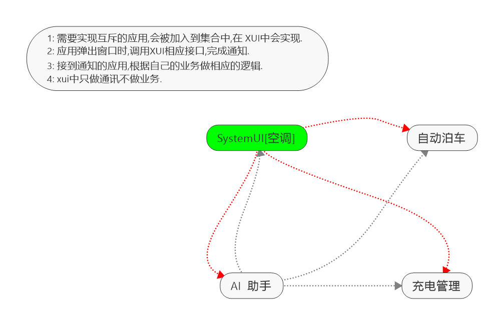

编写目的
解决个应用之间弹出窗口相互掩盖,相互之间无法通讯的问题.
文档范围
此文档之定义个应用之间弹出窗口达到互斥的规则.
实现原理
IPC See More detail :
http://doc.xiaopeng.local:18090/pages/viewpage.action?pageId=20153439

目前互斥应用范围 [
范围是指现在或者将来需要这项能力
]
序号
应用名
包名
时间
1
空调
com.android.systemui
2019/1/31
2
AI助手
com.xiaopeng.aiassistant
2019/1/31
3
自动泊车
com.xiaopeng.autopilot
2019/1/31
4
充电
com.xiaopeng.chargecontrol
2019/1/31
5
车控
com.xiaopeng.carcontrol
2019/1/31
接入方法
注册IPC组件.
/**
* 初始化IPC组件
*/
private void initIPC() {
Log.i(TAG, "initIPC");
mIpcService = (IIpcService) Module.get(IpcModuleEntry.class).get(IIpcService.class);
EventBus.getDefault().register(XBigDialogEx.this);
}
弹出窗口时调用 XUIComponent.notifyWindows(true/false);
不需要监听时反注册组件.
@Override
public void dismiss() {
Log.i(TAG, "dismiss");
super.dismiss();
//窗口关闭,反注册
ThreadPoolHelper.postBackground(new Runnable() {
@Override
public void run() {
EventBus.getDefault().unregister(XBigDialogEx.this);
}
});
}
NOTE:
以上版本为未完善版,年后2.15号可接入.